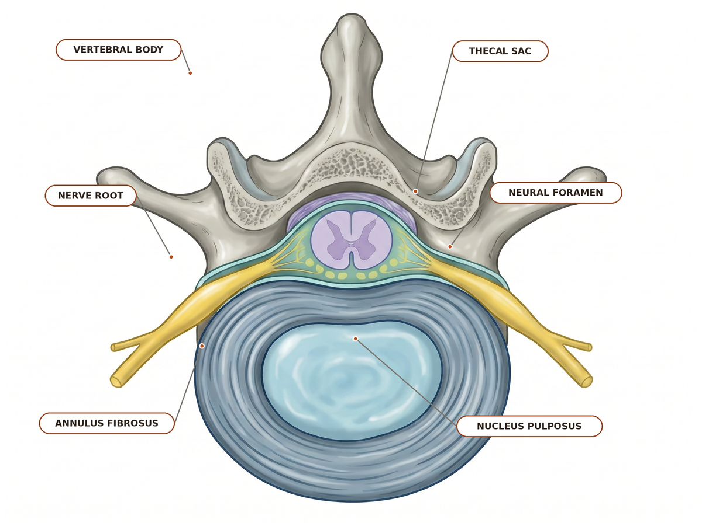
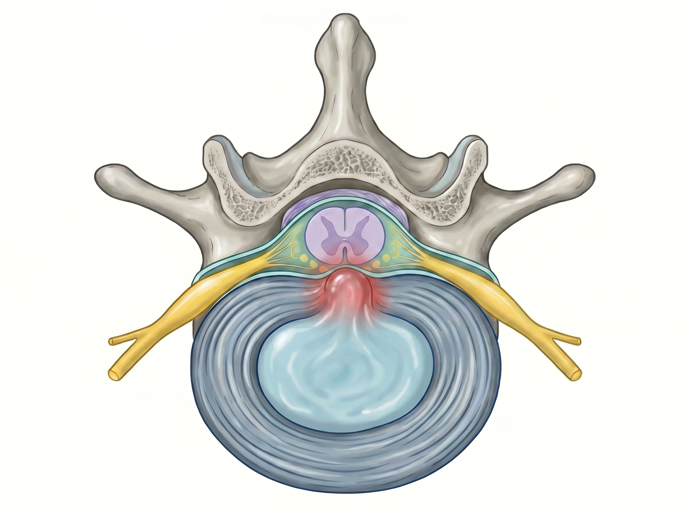
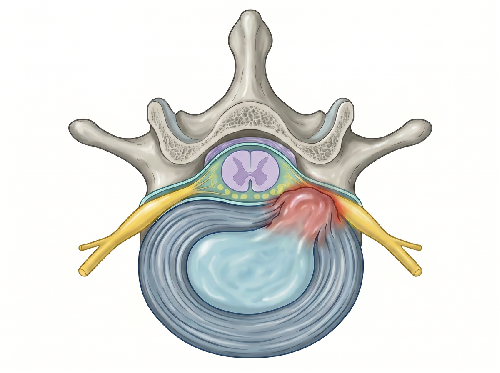
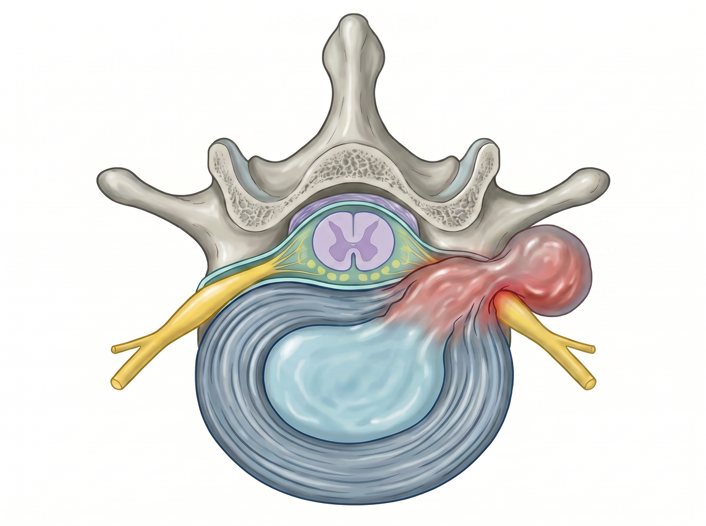

Normal axial relationship
Baseline view before herniation: the posterior disc margin stays behind the thecal sac, with clear lateral recess and foraminal corridors.
Reference anatomy view — the only labeled diagram.Pain drawing
Draw your symptoms on a simple body picture — pick an area, mark where it aches, burns, or feels numb, then tap Complete. We'll point to the one nerve root that pattern most often fits, in plain language, as a starting point for a conversation with a clinician.
Reference pages for clinicians — disc levels, nerve roots, dermatomes, motor and reflex findings.
Educational tool only. Use as a pattern-recognition aid and correlate with the exam, imaging, and red flags.
Cervical · Upper-extremity pattern aid
In the cervical spine, disc-level naming maps differently than lumbar levels: a C5–C6 disc lesion most classically affects the C6 root, a C6–C7 lesion affects C7, and C7–T1 affects C8.
| Disc level | Classic root | Dermatome | Motor | Reflex | Common mimic / caution |
|---|
Cervical root patterns synthesize Kang et al., McCartney et al., and the Merck Manual.
Thoracic · Chest and abdominal wall pattern aid
Thoracic radiculopathy is usually a sensory-predominant syndrome: burning, shooting, or band-like pain wrapping from the back toward the chest or abdomen. Routine limb reflexes are usually less useful than the sensory stripe and myelopathy screen.
| Disc level | Root pattern | Dermatome landmark | Motor / reflex expectation | Key caution |
|---|
Thoracic mapping uses common dermatome landmarks and synthesis from PM&R KnowledgeNow, Johns Hopkins Medicine, and StatPearls — Spinal Nerves.
Lumbar/Sacral · Lower-extremity pattern aid
Select a disc level and herniation morphology. The tool returns the most likely affected root with its dermatome, myotome, reflex, and bedside clue.
Approximately 95% of lumbar disc herniations occur at L4–L5 or L5–S1 [StatPearls].
Morphology atlas · Axial schematic
These simplified axial views show where the fragment sits relative to the canal, lateral recess, and neural foramen. They are teaching schematics, not diagnostic MRI criteria.

Baseline view before herniation: the posterior disc margin stays behind the thecal sac, with clear lateral recess and foraminal corridors.
Reference anatomy view — the only labeled diagram.
Midline posterior material narrows the canal. Symptoms may be bilateral or multiroot rather than a clean single-root pattern.
Use caution: not a one-to-one root localizer.The fragment sits medial to the foramen and most often contacts the traversing root.
Example: L4–L5 usually affects L5.
The fragment sits within the neural foramen and most often contacts the exiting root.
Example: L4–L5 usually affects L4.
The fragment sits lateral to the foramen and most often contacts the exiting root beyond the canal.
Example: L4–L5 usually affects L4.Traversing-versus-exiting root rules follow StatPearls — Lumbar Disc Herniation.
All five disc levels, both morphologies. Tap a row to load it in the tool above.
| Disc level | Paracentral → traversing root | Far-lateral → exiting root | Dermatome (autonomous zone) | Motor | Reflex |
|---|
Autonomous zones from StatPearls — Radicular Back Pain. Motor and reflex columns synthesize StatPearls — Lumbar Disc Herniation and the Merck Manual.
Clinical warning · Not a diagnosis
Pain drawing
Pick an arm, torso, or leg area to draw symptoms that radiate from the spine — like pain, numbness, or tingling. Pick the area that bothers you most; you can mark more than one.
An education tool for clinic discussion. It does not diagnose the cause of symptoms, and nothing you draw is saved.
Region
Press and drag to paint over the spots where you feel it, like drawing with your finger. Use the eraser, undo, or clear in the tool palette to fix mistakes.
Brush
Your result
Each nerve from your spine sends feeling to its own area of skin and muscle. Based on where you marked your symptoms, here's the nerve area that may fit best. Nerve areas overlap a lot, so think of this as a helpful starting point for a talk with your care team — not a diagnosis.
Nerves share a lot of the same skin and muscles, and real symptoms do not always follow the textbook. This is here to help you and your care team talk things through — it is not a diagnosis, and it does not replace a real exam.
References